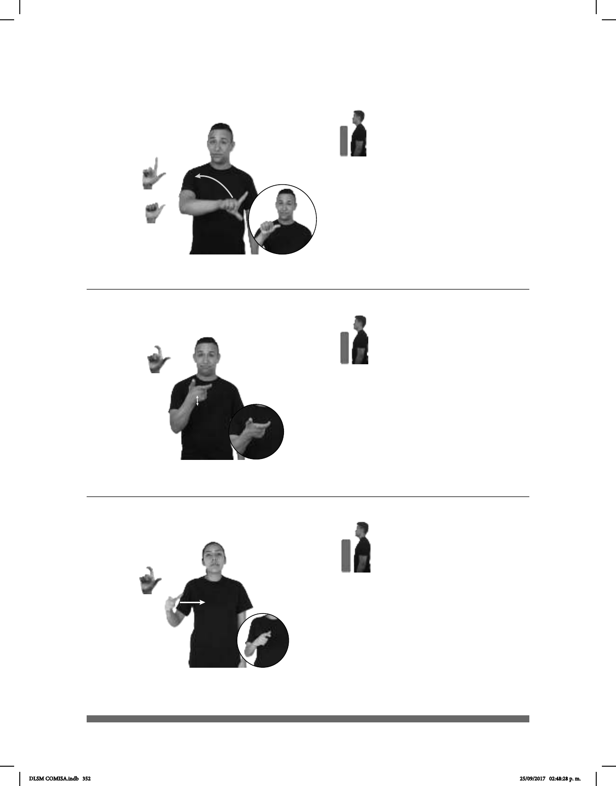

352
Seña: SM
Seña que pasa de
L.7 a A.1
Palma hacia afuera.
A la altura del pecho
del lado izquierdo al lado derecho.
La mano se mueve
formando un arco mientras el dedo
índice se retrae.
adv. En un tiempo, en
un momento posterior o que
sigue a otro; en un lugar que sigue a
otro, que está más alejado o que se
percibe más tarde.
Seña: SM
L.10
Palma hacia arriba.
A la altura del pecho.
La mano simula saltos.
sust. m. sing. Medio de
pago y objeto que lo representa al que
un sistema económico asigna un valor
para que circule entre los miembros de
la sociedad y sirva para comprar cosas
o hacer otras operaciones económicas;
puede ser moneda, billete o algún
documento de valor legal.
(L-35)
(L-34)
____o.i.p._
DESPUÉS pro-YO EXPLICAR QUÉ-PASÓ
pro-YO NECESITAR DINERO PAGAR GASOLINA
Necesito dinero para poder pagar la gasolina.
Seña: SM
L.10
Palma hacia la
izquierda.
A la altura del pecho
del lado derecho al centro.
Recto.
Simula la acción
de sujetar y transportar un disco.
sust. m. Disco
óptico capaz de contener en forma
imágenes, sonidos o datos.
(L-36)
Blueray
NUEVO CD pro-YO YA PERDER
Perdí mi nuevo CD.
DLSM COMISA.indb 352 25/09/2017 02:48:28 p. m.